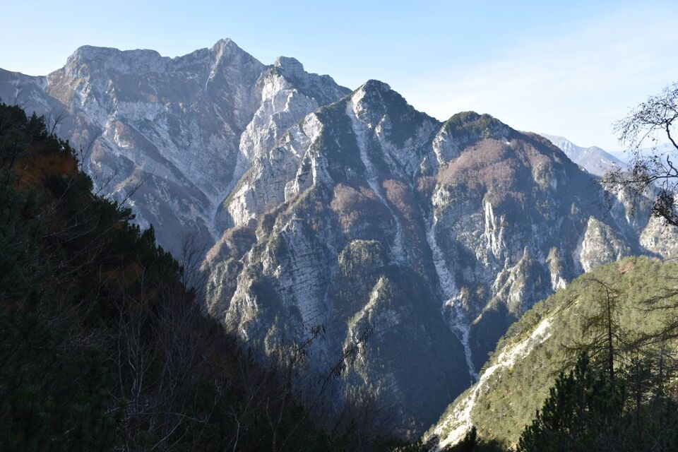

Percorso fantastico, molto lungo e complesso, con problemi di orientamento non da poco, conosciuto solo dai camosci e da qualche cacciatore (cit. Trois Neris).
Per fare chiarezza: il piramidone mugoso è il Palon dei Zàbus, con a dx la Punta Salvotis; piú indietro forca Slips, Plauris e Pale di Misdí. La gola di salita porta piú o meno un po' a sx del colatoio che scende dalla cima del Palon dei Zàbus, dove si trova l'ingresso della miniera; segue poi un lungo traverso in falsopiano su labili tracce (trovato nessun segno umano, ora c'è qualche taglio) sui boschetti pensili ben visibili in foto, da dove ci si cala alla forcella della quota 1161m.
Partiamo da Povici con le frontali.


Verso il Pusti Gost e il vallone del rio Puntuz; binocolando ho trovato un modo per aggirare il salto insuperabile del rio Puntuz.

La gola è molto selvaggia e nella parte alta vanno seguite le tracce degli animali per aggirare dei salti. Troviamo anche un reperto.


Dal termine della gola, seguendo la relazione, montiamo sulla ripidissima costa che permette di guadagnare il bosco pensile soprastante. È forse il punto piú impegnativo dell'escursione, per via di diversi passaggi esposti e verticali fra la vegetazione.


Dopo l'adrenalinica salita della costa, si trova finalmente l'ingresso della miniera.


Continuiamo, iniziando a traversare in piano, non senza qualche dubbio data la totale assenza di tracce umane e di chiari riferimenti.

Un bello scorcio di Povici visto da un angusto canale nella parte finale del traverso.

Dopo un bel po' arriviamo finalmente al forcellino sottostante la quota 1161m; per percorso noto ma non banale scendiamo prima al monte Uarchèc e infine a Povici.

Dalla quota 1161m.

La cima del monte Uarchèc vista dalla ripida costa che permette di montare sulla cresta della quota 1161m.
Mi raccomando che se non si conosce già la discesa, ci si perde e si arriva su salti insuperabili.